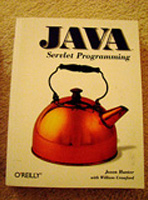

3.2.- Conexión al gestor de aplicaciones web de Tomcat de forma remota.
 -->
Un servidor Apache-Tomcat consta de 3 componentes principales:
- Catalina: es el contenedor de Servlet de Tomcat. Implementa las especificaciones de Sun para servlets y Java Server Pages (JSP).
- Coyote: es el conector HTTP que soporta el protocolo
HTTP para el servidor web o para el contenedor
de aplicaciones.
Coyote escucha las conexiones entrantes en un puerto TCP determinado y redirige las peticiones al motor Tomcat para así procesar las peticiones y mandar una respuesta de vuelta al cliente.
- Jasper: es el motor JSP de Tomcat; compila las páginas JSP en código java
en servlets que puedan ser manejados por Catalina.
En tiempo de ejecución, cualquier cambio en un archivo JSP Jasper lo detecta y lo recompila.
Los modos de operación de Tomcat pueden ser:
- Servidor de aplicaciones:
- Tomcat necesita un servidor que actúe como frontend (Apache, IIS...).
- El contenido estático es servido por el frontend.
- Las peticiones a servlets y JSPs son redirigidas a Tomcat por el servidor web.
- Recibe peticiones en protocolos específicos como AJP que son enviados por el frontend.
- Standalone:
- No hay un servidor web que actúe de frontend.
- Todos los contenidos son servidos por Tomcat.
- Recibe peticiones HTTP.
Los conectores son los componentes que proporcionan la interfaz externa al servidor, concretamente el conector HTTP basado en Coyote es el conector por defecto para Tomcat. Los conectores se definen en el archivo:
$CATALINA_HOME/conf/server.xml , aquí tenemos un ejemplo:
<Conector port="8080"
protocol="HTTP/1.1"
maxTherads="150"
connectionTimeout="2000"
redirectPort="8443"/>
debido a establecer medidas de seguridad para conexiones web al servidor, podremos configurar para un conector HTTP/1.1 con SSL lo siguiente:
<Conector port="8080"
protocol="HTTP/1.1"
maxTherads="150"
scheme="https"
secure="true"
clientAuth="false"
sslProtocol="TLS"/>
en donde vemos que se han establecido los atributos scheme para el protocolo, y
secure para establecer que se trata de un conector SSL.